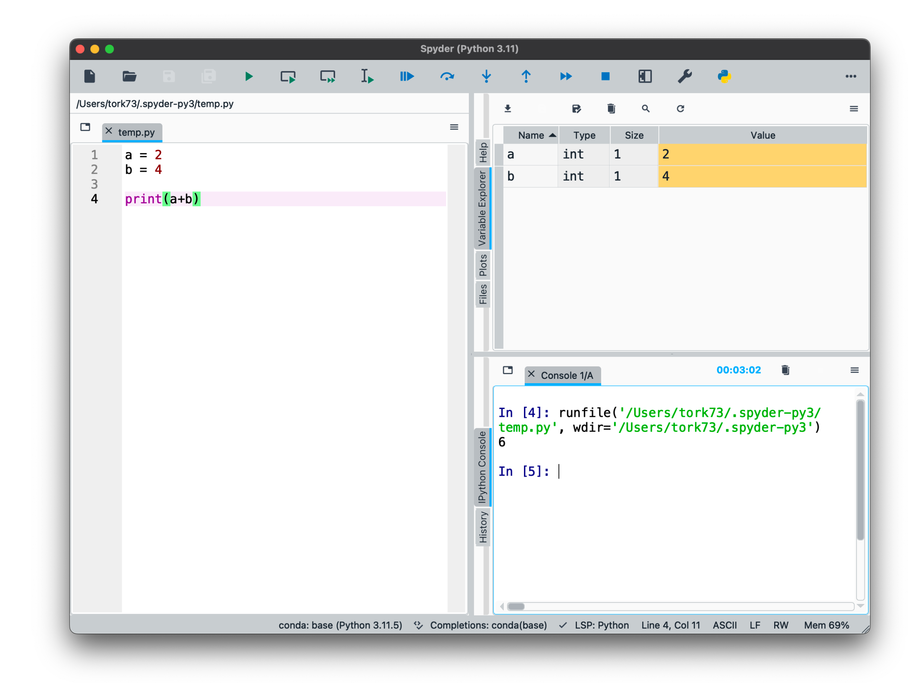
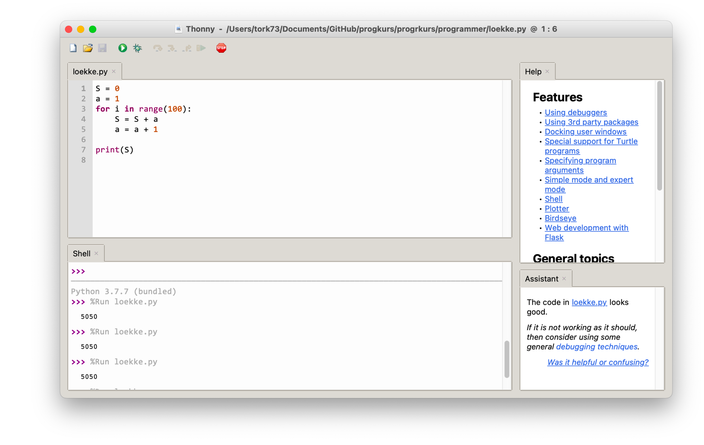
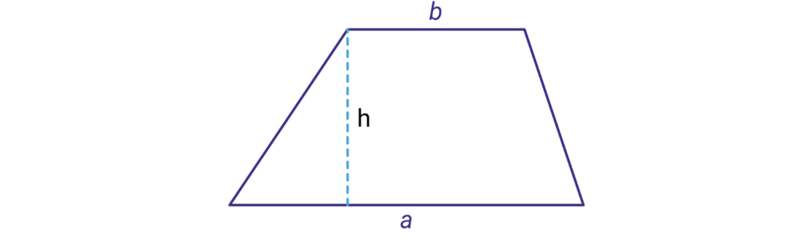
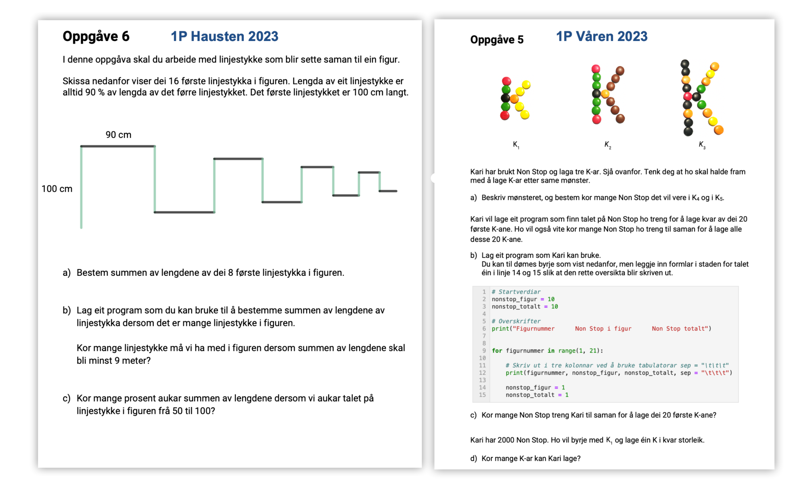
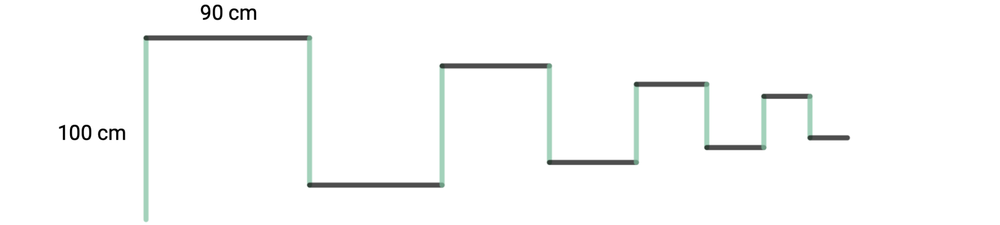
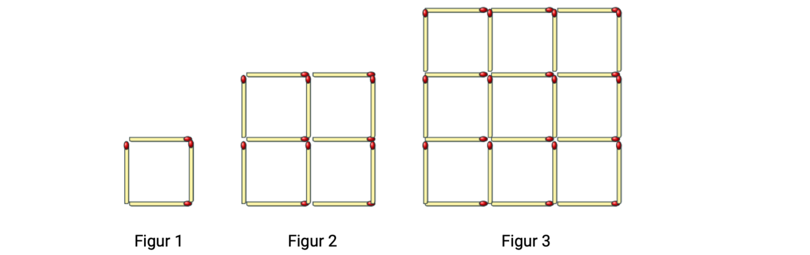
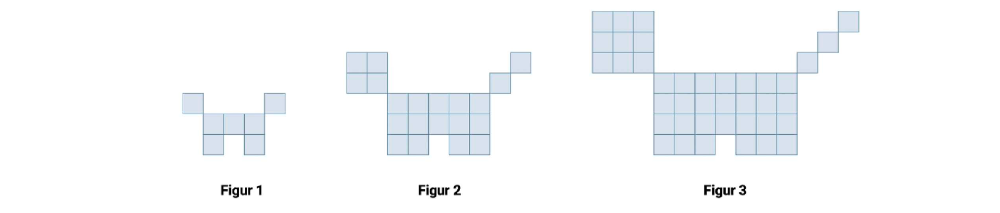
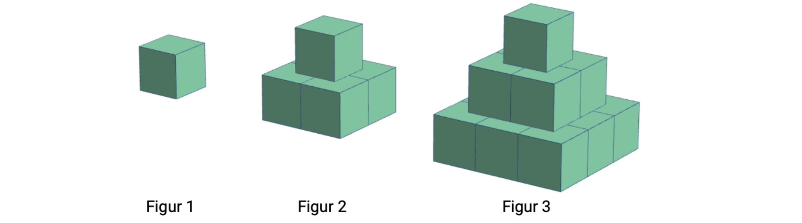

Webinar 1: Grunnleggende programmering#
Mål:#
Litt om editorer og IDEer
Litt om programmering med elever
Løkker og betingelser
Litt om funksjoner og moduler
Litt om editorer og IDEer#

IDE = Integrated Development Environment.
En IDE er et program som er laget for å hjelpe deg med å skrive kode og å kjøre koden.
IDEer:

Tips 1: start tidlig#
Regn ut
a) \(1+2\cdot 4\)
b) \(2^5-1\)
c) \(\dfrac{4+5\cdot 6^2}{7}\)
1+2*4
9
2**5-1
31
(4+5*6**2)/7
26.285714285714285
# Du har 200 kroner og skal kjøpe sjokolader som koster 7 kr per stk.
# Hvor mange har vi råd til?
200 // 7
28
200/7
28.571428571428573
200 % 7
4
| Symbol | Operasjon | Eksempel | Resultat |
|---|---|---|---|
| + | Addisjon | 1+2 | 3 |
| - | Subtraksjon | 23 - 11 | 12 |
| * | Multiplikasjon | 4.3*5.5 | 23.65 |
| / | Divisjon | 15/4 | 3.75 |
| ** | Potens | 2**3 | 8 |
| // | Heltallsdivisjon | 10//4 | 2 |
| % | Kongruens modulo | 28 % 12 | 4 |
Tips 2: Start enkelt!#
Formelen for arealet \(A\) til et trapes er gitt ved formelen
Lag et program som regner ut arealet til trapeset når \(a=4.3\), \(b=6.5\) og \(h=2.1\).

a = input("Skriv inn lengden a: ")
b = input("Skriv inn lengden b: ")
h = input("Skriv inn lengden h: ")
a = float(a) # omdefinerer a til å være et desimaltall
b = float(b)
h = float(h)
A = (a+b)/2 * h
print("Arealet er", A)
---------------------------------------------------------------------------
StdinNotImplementedError Traceback (most recent call last)
Cell In[7], line 1
----> 1 a = input("Skriv inn lengden a: ")
2 b = input("Skriv inn lengden b: ")
3 h = input("Skriv inn lengden h: ")
File ~/anaconda3/lib/python3.11/site-packages/ipykernel/kernelbase.py:1201, in Kernel.raw_input(self, prompt)
1199 if not self._allow_stdin:
1200 msg = "raw_input was called, but this frontend does not support input requests."
-> 1201 raise StdinNotImplementedError(msg)
1202 return self._input_request(
1203 str(prompt),
1204 self._parent_ident["shell"],
1205 self.get_parent("shell"),
1206 password=False,
1207 )
StdinNotImplementedError: raw_input was called, but this frontend does not support input requests.
type(a)
float
a
3.0
Datatyper i Python#
Det finnes mange forskjellige datatyper i Python. De vanligste er:
| Kode | Datatype | Eksempel |
|---|---|---|
| int | heltall | 4343 |
| float | desimaltall | 3.14159 |
| str | streng (tekst) | "Eksempeltekst" |
| bool | boolsk verdi | False |
| list | liste | [3, 4, "sko", -4] |
Tips 3: Ikke programmering på prøver i første termin#

Betingelser og løkker#
Betingelser#
| Relasjon | Betydning |
|---|---|
| a == b | tester om a er lik b |
| a != b | tester om a er ulik b |
| a < b | tester om a er mindre enn b |
| a <= b | tester om a er mindre eller lik b |
| a > b | tester om a er større enn b |
| a >= b | tester om a er større enn eller lik b |
2 != 1+1
False
Eksempel#
Lag et program som simulerer et terningskast.
Dersom vi får mindre enn fire øyne, skal programmet skrive ut «Du tapte!».
Dersom vi får fire eller fem øyne, skal det skrive ut «Du vant en liten premie!».
Dersom vi får seks øyne, skal det skrive ut «Du vant en stor premie!».
from random import randint
øyne = randint(1, 6) # Får et tilfeldig tall blant tallene 1, 2, 3, 4, 5, 6
if øyne < 4:
print("Du tapte!")
elif øyne < 6:
print("Du vant en liten premie!")
else:
print("Du vant en stor premie!")
Du vant en liten premie!
øyne
2
Løkker#
For-løkker#
Eksempel 1#
Skriv ut de fem første kvadrattallene.
for tall in [1, 2, 3, 4, 5]:
print(tall**2)
1
4
9
16
25
for tall in range(1, 6):
print(tall**2)
1
4
9
16
25
Fra Pythons innebygde hjelp-funksjon:
range(j) gir oss tallene 0,1, …,j-1.
range(i,j)gir oss tallene i,i+1, …,j-1.
range(i, j, k) gir oss tallene i, i + k, i + 2k … , i + m - k, der m er største heltall slik at i + m \(\cdot\) k < j.
for i in range(1, 11, 6):
print(i)
1
7
Eksempel 2#
Finn summen av de 100 første oddetallen.
S = 0 # dette skal bli hele summen
for tall in range(1, 101):
S = S + 2*tall - 1
print(S)
10000
sum(range(1, 100*2+1, 2))
10000
Eksempel 3#
Maren jobbar i ein butikk, og har fått i oppgåve å stable hermetikkboksar. Ho har 150 boksar som ho kan nytta. Boksane skal stablast slik at det er éin boks i øvste rad, to i nest-øvste, tre i rada under der og så vidare. Sjå bilete. Kor mange rader kan ho stable boksane i?
While-løkke#
Så lenge betingelse er sann, gjør dette:
kode
Eksempel på en enkel while-løkke i Python:
teller = 0
while teller < 10:
print(teller)
teller = teller + 1
print("Ferdig")
0
1
2
3
4
5
6
7
8
9
Ferdig
Eksempel 4 (Oppgave 6, del 2, eksamen 1P 2023)#
I denne oppgaven skal du arbeide med linjestykker som settes sammen til en figur.
Skissen nedenfor viser de 16 første linjestykkene i figuren. Lengden av et linjestykke er alltid 90 % av lengden av det forrige linjestykket. Det første linjestykket er 100 cm langt.

a) Bestem summen av lengdene av de 8 første linjestykkene i figuren.
S = 0 # Dette skal bli summen av lengdene
lengde = 100 # Dette er den første lengden
for i in range(8):
S = S + lengde
lengde = lengde * 0.9
print(f"Lengden av de første 8 linjestykkene er {S:0.2f} cm")
Lengden av de første 8 linjestykkene er 569.53 cm
b) Lag et program som du kan bruke til å bestemme summen av lengdene av linjestykkene dersom det er mange linjestykker i figuren.
Hvor mange linjestykker må vi ha med i figuren dersom summen av lengdene skal bli minst 9 meter?
S = 0 # Dette skal bli summen av lengdene
lengde = 100 # Dette er den første lengden
n = 22 # antall linjestykker
for i in range(n):
S = S + lengde
lengde = lengde * 0.9
print(f"Lengden av de første {n} linjestykkene er {S:0.2f} cm")
Lengden av de første 22 linjestykkene er 901.52 cm
S = 0 # Dette skal bli summen av lengdene
lengde = 100 # Dette er den første lengden
n = 0 # antall linjestykker
while S < 900:
n = n + 1
S = S + lengde
lengde = lengde * 0.9
print(n)
22
c) Hvor mange prosent øker summen av lengdene dersom vi øker antall linjestykker i figuren fra 50 til 100?
# Løsning 1
# Finner først summen av de 50 første:
S1 = 0 # Dette skal bli summen av de 50 første lengdene
lengde = 100 # Dette er den første lengden
for i in range(50):
S1 = S1 + lengde
lengde = lengde * 0.9
S2 = 0 # Dette skal bli summen av de 50 første lengdene
lengde = 100 # Dette er den første lengden
for i in range(100):
S2 = S2 + lengde
lengde = lengde * 0.9
rel = (S2-S1)/S1
print(f"Økningen er {rel:0.2%}")
Økningen er 0.52%
# Løsning 2
def Sumlengde(n):
"""
Regner ut summen av lendene til de n første linjestykkene.
"""
S = 0
lengde = 100
for i in range(n):
S = S + lengde
lengde = lengde * 0.9
return S
rel = (Sumlengde(100)-Sumlengde(50))/Sumlengde(50)
print(f"Økningen er {rel:0.2%}")
Økningen er 0.52%
Sumlengde(8)
569.5327900000001
Eksempel 5 (Fra eksempelsett 2, 1P 2021)#

De tre figurene er laget av fyrstikker.
Figur 1 består av ett lite kvadrat, figur 2 består av fire små kvadrater, og figur 3 består av ni små kvadrater.
Tenk deg at du har 10 000 fyrstikker.
Du skal lage de tre figurene, og så fortsette å lage figurer etter samme mønster, én i hver størrelse.
a) Hvor mange figurer kan du lage?
b) Hvor mange fyrstikker vil du ha igjen når du har laget den siste figuren?
S = 0 # Så mange fyrstikker jeg bruker
n = 0
while S <= 1000:
n = n + 1
S = S + 2*n*(n+1)
print(n-1, S-2*n*(n+1))
10 880
1000-(S-2*n*(n+1))
120
Eksempel 6 (Oppgave 13, eksempelsett 1P 2021)#

Ovenfor ser du tre figurer. Figurene er satt sammen av små kvadrater.
Tenk deg at du skal fortsette å lage figurer etter samme mønster.
a) Lag en algoritme som du kan bruke til å bestemme hvor mange små kvadrater du totalt trenger for å lage de 100 første figurene.
b) Bruk algoritmen og bestem hvor mange små kvadrater du trenger.
def H(n):
hode = n**2
hale = n
resten = (2*n+1)*(n+1)-1
return hode + hale + resten
H(1)
7
# Regner så ut summen av de 100 første figurene:
S = 0
for n in range(1, 101):
S = S + H(n)
print(S)
1035250
Eksempel 7 (Oppgave 6, eksamen 1P Våren 2022)#

Ovanfor ser du tre figurar. Figurane er sette saman av små klossar. Roar vil fortsetje å lage figurar etter same mønster.
a) Kor mange klossar treng han for å lage figur 5?
b) Kor mange klossar treng han til saman for å lage dei 10 første figurane?
Roar har 10 000 klossar. Han vil starte med den minste figuren og lage éin figur i kvar storleik
c) Kor mange figurar kan han lage?
# a)
S = 1**2 + 2**2 + 3**2 + 4**2 + 5**2
print(S)
55
def fig(n):
S = 0
for i in range(1, n+1):
S = S + i**2
return S
S = 0
for n in range(1, 11):
S = S + fig(n)
print(S)
1210
klosser = 0
n = 0
while klosser < 10000:
n = n + 1
klosser = klosser + fig(n)
print(n, klosser)
print(n-1)
1 1
2 6
3 20
4 50
5 105
6 196
7 336
8 540
9 825
10 1210
11 1716
12 2366
13 3185
14 4200
15 5440
16 6936
17 8721
18 10830
17